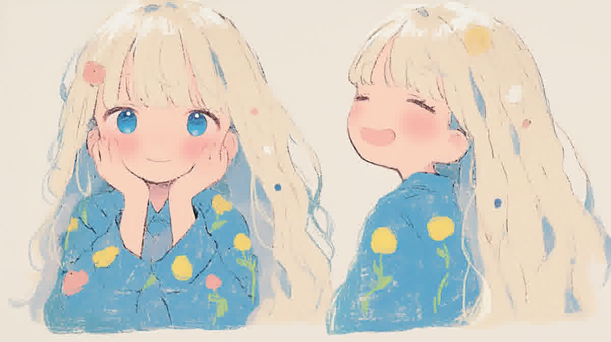

Creative Lab · Featured Work
自由不是寻找
Freedom Was Never Found
← 返回 Creative Lab
状态：视觉开发进行中 · Final Film 尚未完成 · Case Study 页面待补充
真实角色设定素材 · 来自 D:\freedom

核心命题
自由不是寻找后的结果，而是人的本质属性。项目通过“宇宙树”世界观构建：不同枝杈保持独立，人物是同一灵魂本质的不同投射，通过根系产生共振，而非相遇。
制作流程
- 世界观 → 人物资产 → 场景资产 → 分镜 → 视频生成 → 后期合成。
- 当前已完成：世界观设定、角色设定、部分场景与分镜。
- 未完成：视频生成与后期合成，最终成片尚未产出。
Case Study 未来将补充
- 完整概念文档与世界观设定。
- 分镜序列与视觉风格参考板（mood board）。
- AI 生成图到后期合成的过程版本对比。
- Final Film 嵌入或预告片。
- 创作反思：AI 在哪些环节放大了创意，哪些环节仍需要人工闸门。
现有真实资产
- D:\AI_Workstation\01_Active_Projects\90秒自由预告\项目说明.md
- D:\freedom\分镜\1.png、2.png
- D:\freedom\zfjnxb81387v_* 角色设定、场景氛围、几何构成等系列图片
- D:\freedom\提示词.docx